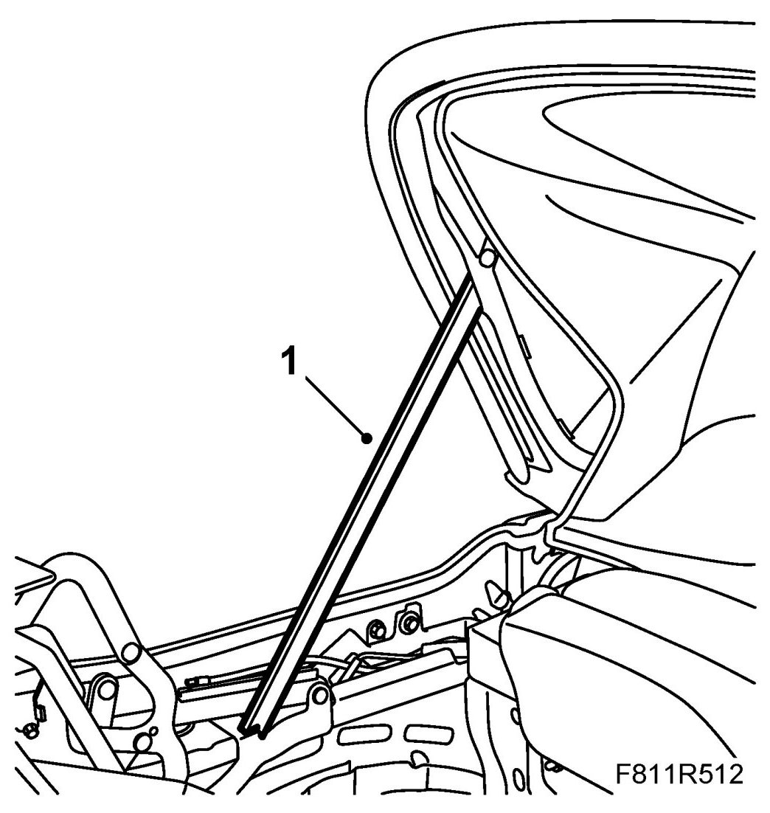
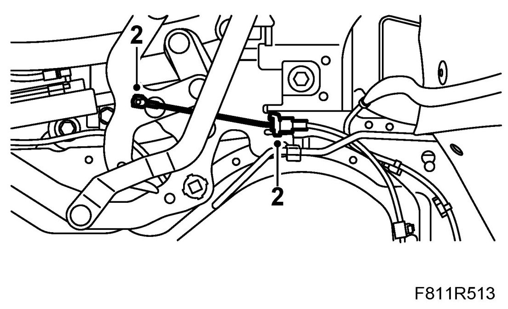
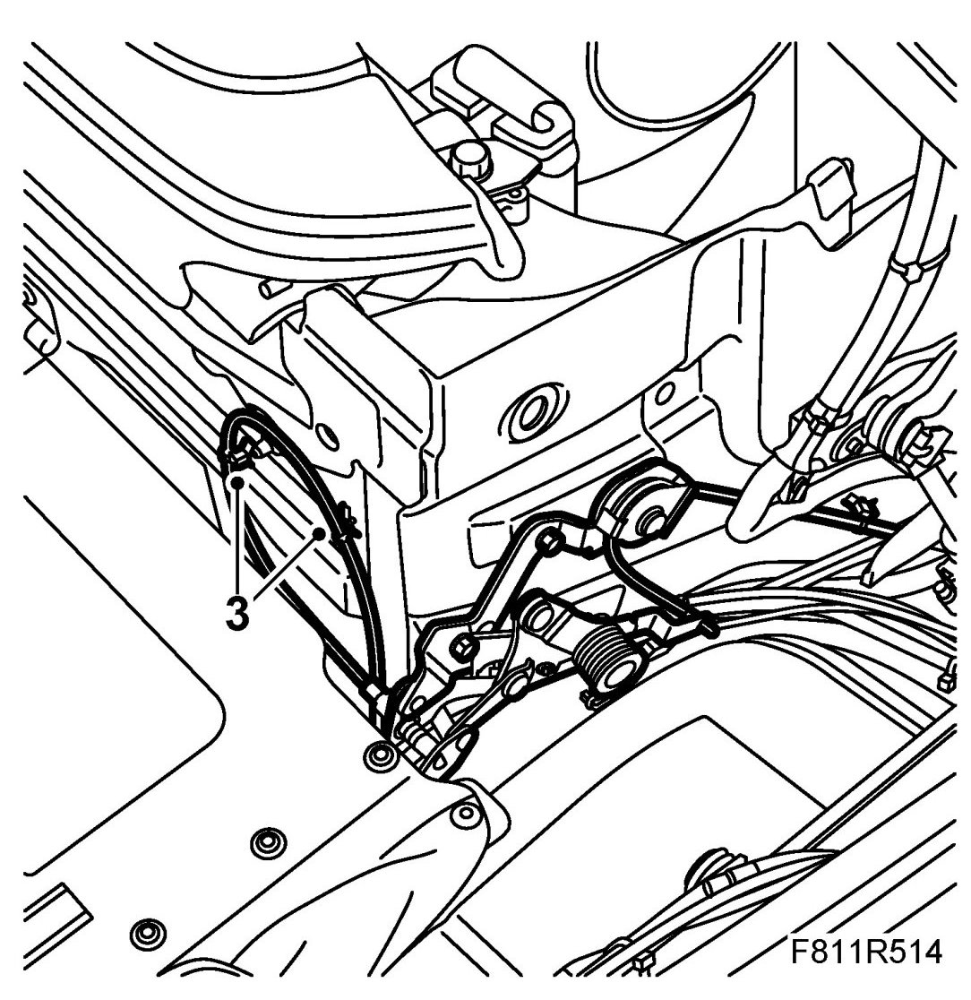
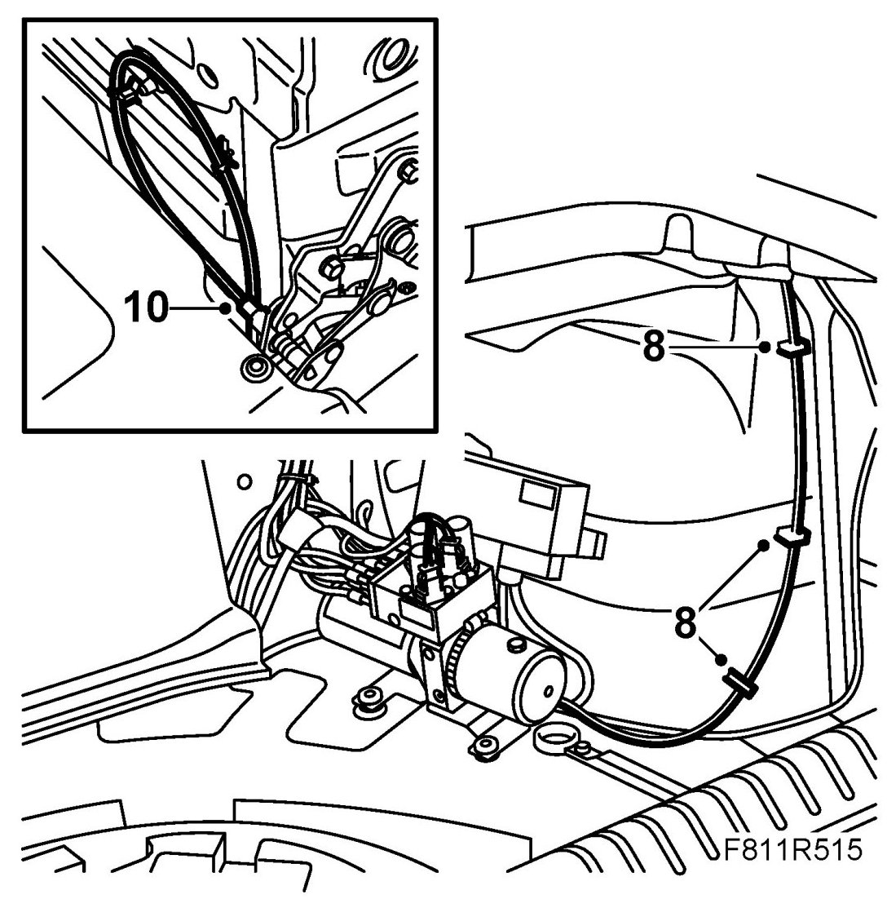
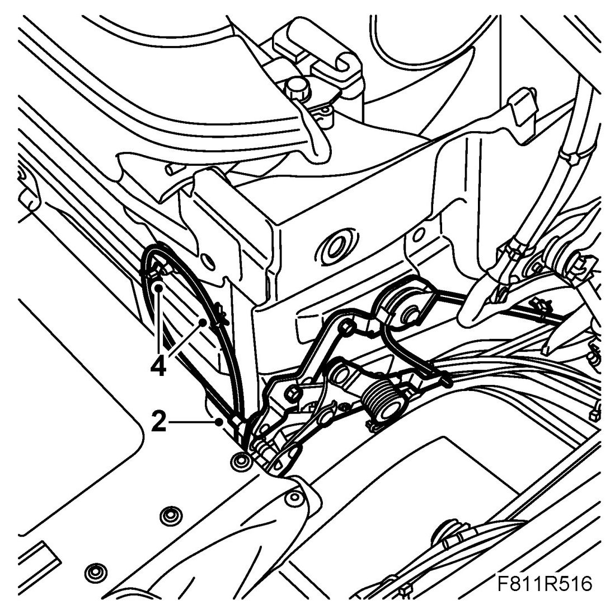
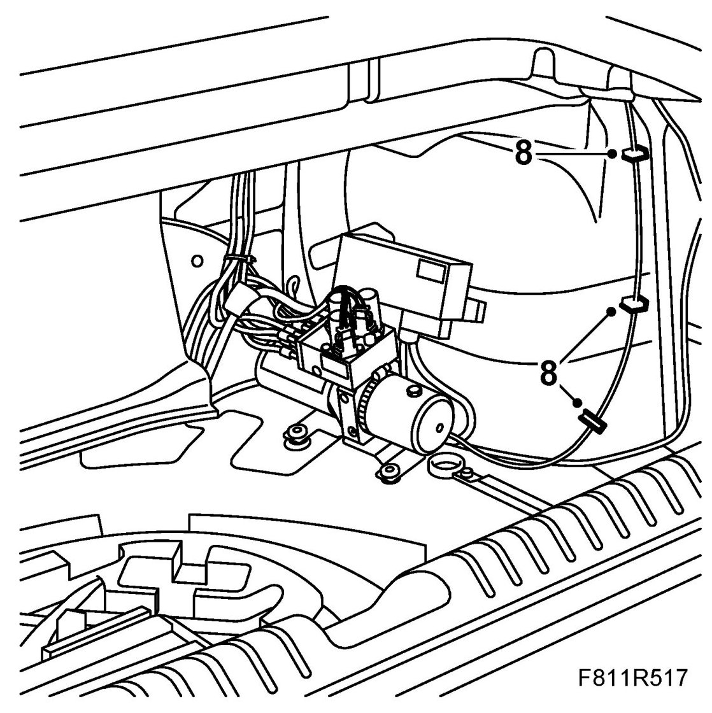
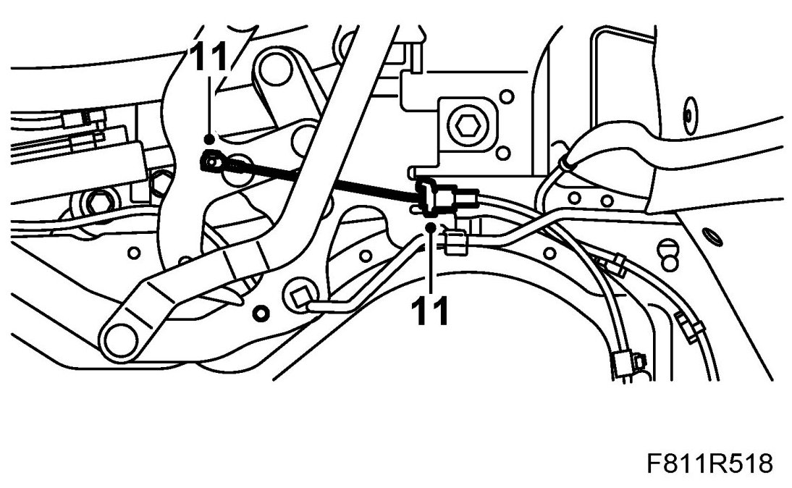

Lock For Soft Top Storage Drive
Lock For Soft Top Storage Drive
To remove
1. Open the sixth bow and secure with the soft top support.

2. Remove the cable locks on the soft top cover hinge. Unhook the cable.

3. Loosen the upper clips on the torsion box for the cable. Note the location of the cable.

4. Remove the soft top support. Close the soft top cover and sixth bow.
5. Open the bootlid.
IMPORTANT: Take care when opening the boot lid when the soft top cover is not locked as there is a risk of damaging the paintwork.
6. Remove Luggage compartment side trim, CV.
7. Undo the control module nuts. Lay the control module to one side.
8. Loosen the cable clip.

9. Close the boot lid. Open the sixth bow and the soft top cover. Secure with the soft top support.
10. Remove the lock clip for the soft top storage lock. Remove the lock complete with cable.
To fit
1. Place the soft top storage lock (complete with cable) in mounting position.
2. Fit the lock clip.

3. Lower the cable into the luggage compartment. The cable must be behind the trim.
4. Fit the upper cable clip on the torsion box. Note the position of the cable.
5. Remove the soft top support. Close the soft top cover and sixth bow.
6. Open the bootlid.
IMPORTANT: Take care when opening the boot lid when the soft top cover is not locked as there is a risk of damaging the paintwork.
7. Put the cable in mounting position. The cable must be lying behind the hose package. Make sure the cable is drawn correctly.
8. Fit the cable clip.

9. Fit the control module.
10. Close the boot lid. Open the soft top cover and the sixth bow. Secure with the soft top support.
11. Fit the cable to the soft top cover hinge with a pair of pliers. The cable must be lying behind the emergency operation tool. Fit the lock clips.

12. Fit Luggage compartment side trim, CV
13. Remove the soft top support. Close the soft top cover and sixth bow.
14. Connect the diagnostics tool and erase any diagnostic trouble code.
15. Test the operation of the soft top.